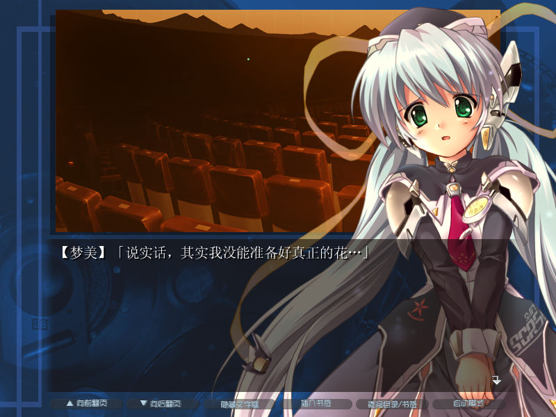

名稱：星之夢 (Planetarian: The Reverie of a Little Planet，簡中版) 簡介：Key 2004年出品的劇情故事閱讀遊戲 [待補]。
備註：本版為簡中漢化版，必須在簡中系統執行，否則會亂碼。 保護：不明 備註：新遊戲進入第一個畫面時，可能會因為找不到字形而當死，可進行下列修改略過： Kinetic.exe 85 C0 75 0D 5F 5E 5D B8 01 -- -- EB -- -- -- -- -- -- 操作：Ctrl = 快速略過劇情對話